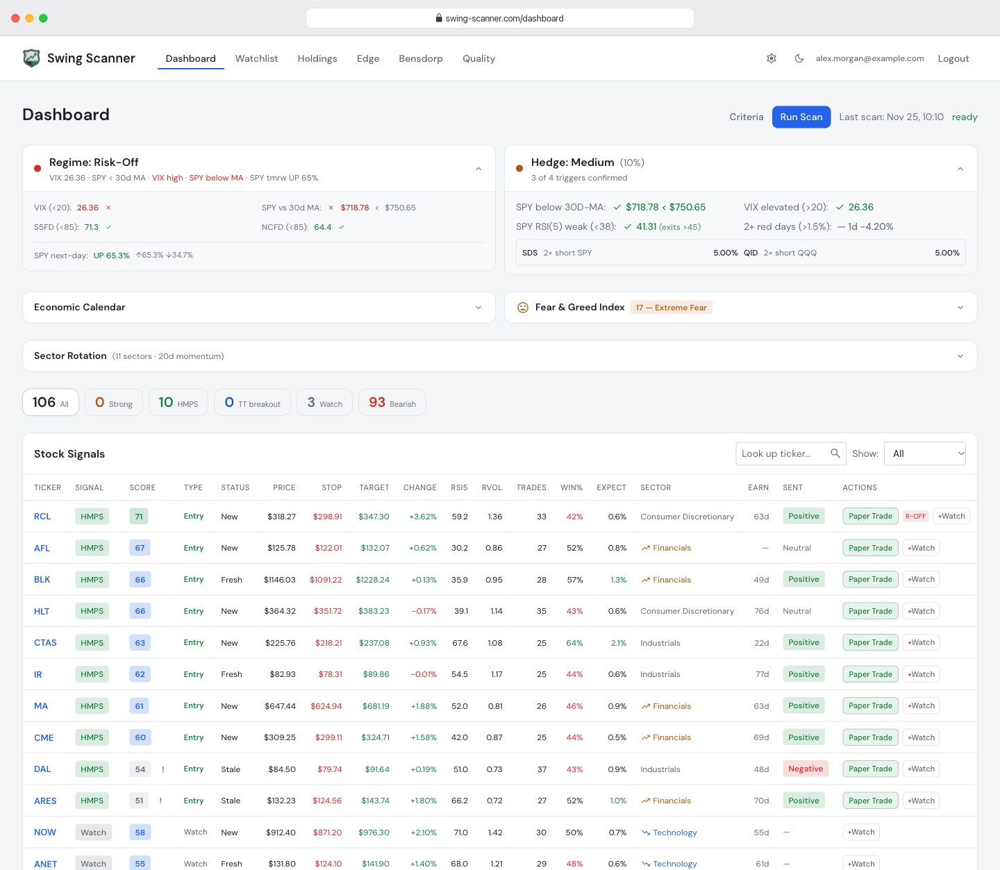
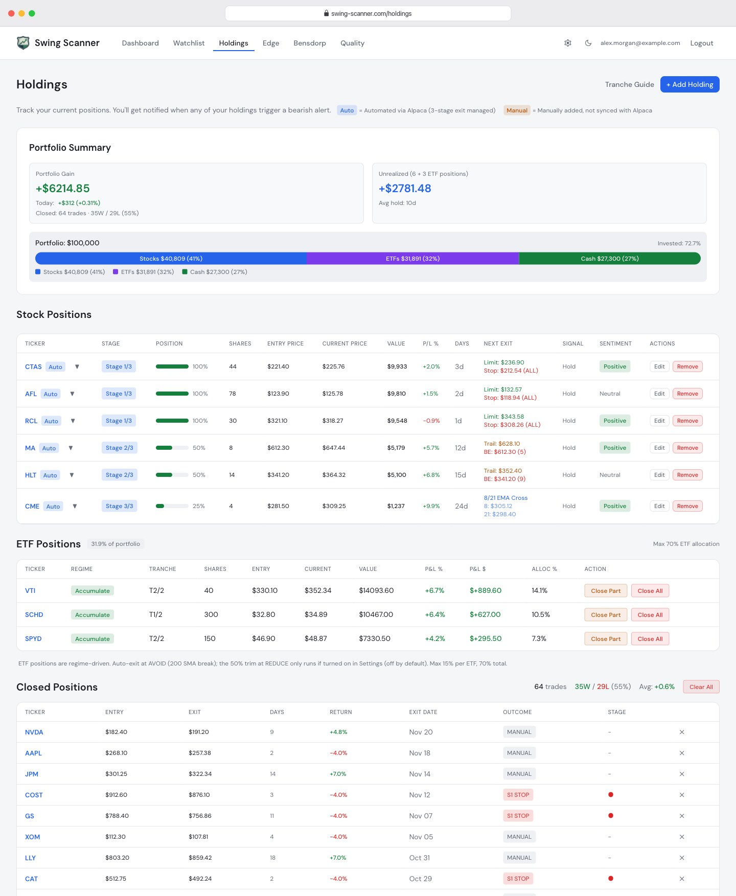
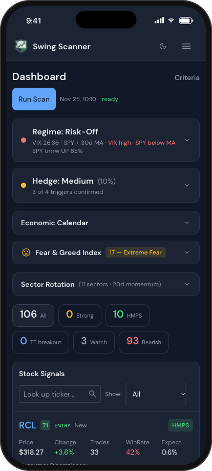
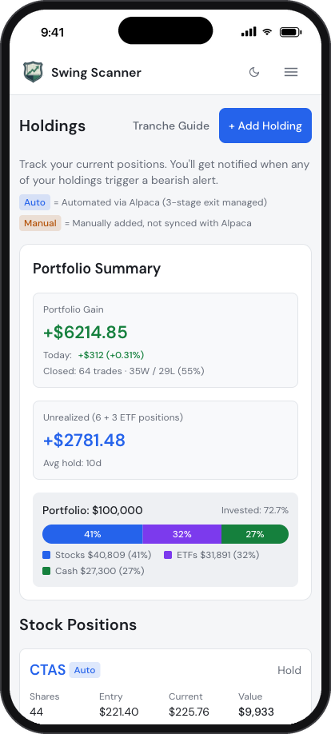
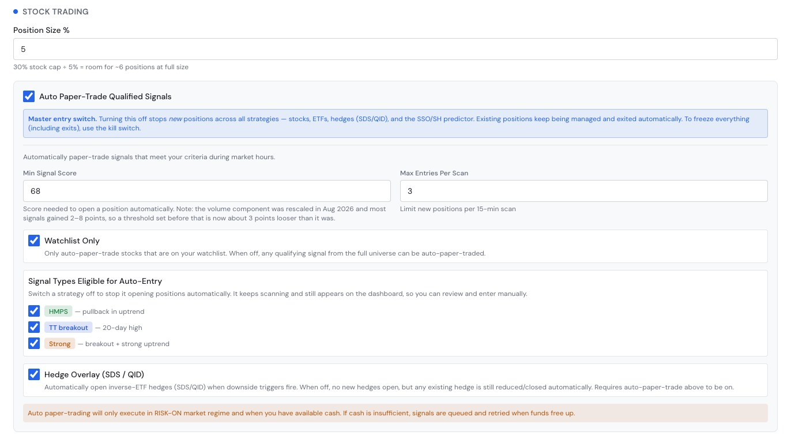

Stock Screening & Automated Investment Platform
A friend and I had been following a swing trading strategy for a while: finding stocks in a strong uptrend that pull back or break out, holding them for days to weeks, and exiting in stages. It worked, but it was very labor intensive. Every day meant visiting many sites, aggregating data across them by hand, placing entry and exit orders manually, and updating stop losses as positions moved.
As a part-time project while teaching at Northeastern University, I designed and built a platform that does all of that. It scans the market throughout the day, scores and explains every signal, opens positions, and manages each one through to its exit, on desktop and phone. I'm a designer, not an engineer: Claude Code, an AI coding agent, wrote the code, while I owned the product, the design, the research, and every decision about what to trust.
Swing trading rewards discipline more than insight. The rules were clear: only trade when the market is healthy, look for strong stocks that pull back or break out, size each position to its risk, take partial profits on the way up, and protect the rest with a stop. Doing that by hand meant checking charts, earnings dates and market conditions across a handful of sites, then entering orders and moving stops one at a time.
The manual process failed in predictable ways. Setups were missed because nobody was looking at that moment. Stops lagged because updating them was tedious. And the rules bent under pressure, which is exactly when they matter most.
Design goal
Turn a strategy that lived in two people's heads and a dozen browser tabs into a product that applies the rules the same way every time, for any user, and shows its reasoning so a person can still overrule it.
The platform follows the same workflow we used to run by hand:

The dashboard: market conditions at the top, then every signal with its grade and status.

Additional strategies live on their own page, separate from the signals that can open positions.
It started as a tool for two people, but I designed it as a product for anyone who wants to follow a disciplined strategy without living in a dozen browser tabs. Every user has their own account, brokerage connection, watchlist, risk limits and alerts. It was built multi-user from day one, so opening it up is a business decision rather than a rebuild. I've held back from inviting more users because a tool that places trades for other people starts to look like investment advice, which is a legal question, not a design one.
Designing for that wider audience shaped every screen. Experienced traders need dense, changing information that is quick to scan; newer ones need to understand why the system did what it did. The answer to both was the same: don't simplify the strategy, make its decisions easy to see and audit.
A score alone invites blind trust. So every signal carries its evidence alongside it, and the rules behind every decision are documented in plain language, one click away from the dashboard. When the logic changes, the explanation changes with it.

A position isn't a single row with a profit number; it moves through stages. The Holdings page shows where each position is in its exit plan, how it is protected, and what happens next.

Account figures and positions in these screenshots are sample data.
Markets move during the day, so the whole app works on a phone, in light and dark mode, with live prices. A shared design system keeps the screens consistent as features keep being added.


Every automated behavior has a switch, per user and per strategy. Safety stops don't quietly undo themselves: a pause after a losing streak stays on until a person clears it.

I haven't written production code in years. For this project, Claude Code, an AI coding agent, wrote the code, and I worked the way I would with an engineering team: I set the product direction, designed the experience, reviewed every change, and decided what shipped.
The speed was remarkable. Features that would have been a quarter-long roadmap item for a team took an afternoon.
But speed moved the bottleneck. Writing code stopped being the hard part. Knowing whether the code, and the claims about it, were actually right became the hard part.
Visual design had the same problem in a different form. The agent makes hundreds of small styling decisions in every session and remembers none of them the next time. After months of features, the app had nearly 6,000 hard-coded color choices and three competing ways of handling dark mode.
So I treated the design system as something the agent reads and is held to, not a style guide it might remember: named color tokens that switch with the theme, one icon set, written specs for each component, and an automated check that rejects any change using a color, icon or value outside the system. Then every page was moved onto it, one at a time, with each change checked against the page it replaced.
I run the platform on a real-money brokerage account. That changes how you look at everything: a bug isn't a broken screen, it's a position without protection. And early live results lagged the market. So a large part of this project became research: finding out why, with the same rigor I'd bring to a user research program.
The strategy itself held up. What hurt was timing: the system acted on information that was still changing during the day, so it tended to enter at worse prices than the strategy assumed. How it executed mattered more than what it picked.
The fix that would have recovered most of that was one I chose not to ship. It would have made the system far more complex to run safely on a live account. Less return on paper, much less risk in practice. That is a product call, not a math problem.
Several features we had assumed were helping turned out not to, once they were tested properly:
The signal score
Higher-scoring signals did no better than lower-scoring ones.
The machine-learning predictor
It did no better than always guessing the market goes up, and its most confident calls were its worst.
Pausing after losing streaks
Trades after a bad run did no worse, often better, because losing streaks tend to end in selloffs that set up good entries.
A stock's own track record
Each stock had too little history for its past results to say anything about its next trade.
The pattern was the same each time: a feature that sounded right and looked sophisticated, but had never been tested against the simplest alternative.
The most important thing I learned is how an AI collaborator fails. It rarely writes broken code. It writes a plausible explanation and states it as fact. One backtest showed a large improvement from a small rule change; it turned out the simulation was using information it couldn't have had in real life, and the real improvement was zero. Its estimates of size and effect were often off by several times, always with the same confidence.
None of this is a reason not to use AI. It's a reason to manage it like a fast, brilliant, overconfident new hire. I turned what I learned into written working rules that the agent follows in every session:
These are the same habits that make good UX research credible: separate observation from interpretation, know your sample size, and don't let a compelling story outrun the evidence.
When an AI can build almost anything quickly, the value moves to deciding what's worth building, what is actually true, and what risk is acceptable. Those were always design and product leadership skills; AI makes them the whole job.
With real money on the line, I kept choosing the simpler design over the one that looked better on paper. Safety rules are enforced by the system itself, never by someone remembering a step after a release. A clever system that only works when it is operated perfectly is a fragile one.
Showing the reasoning behind every signal didn't just help us trust the system. It showed us exactly where not to.
Swing Scanner is a personal project. Nothing on this page is investment advice, and past or backtested results don't predict future returns.